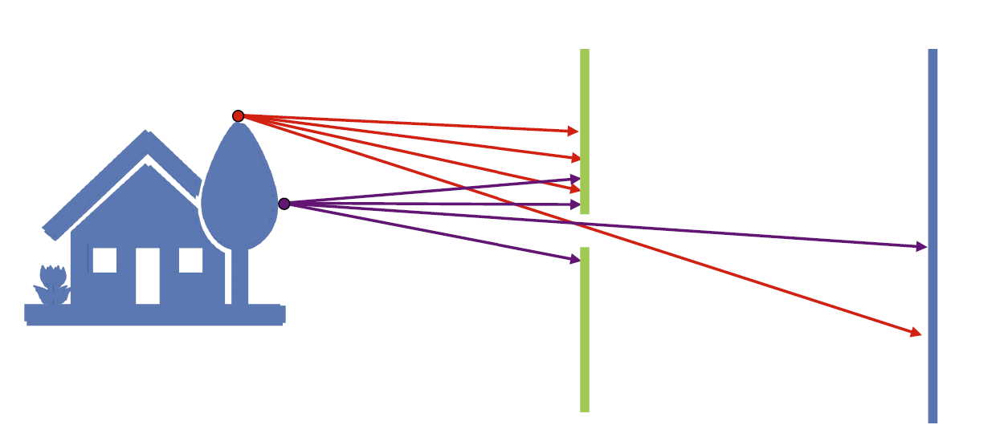
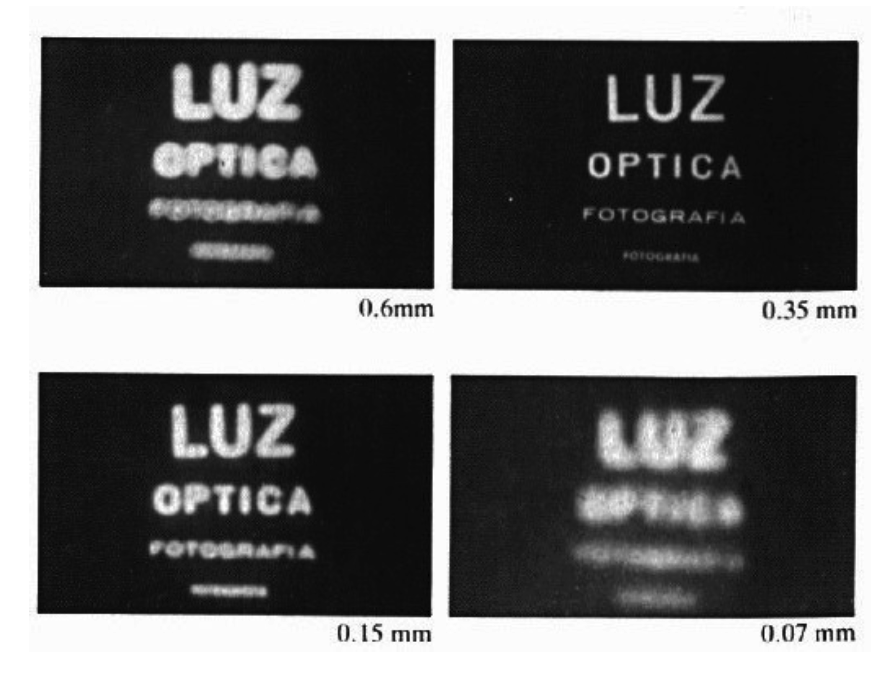
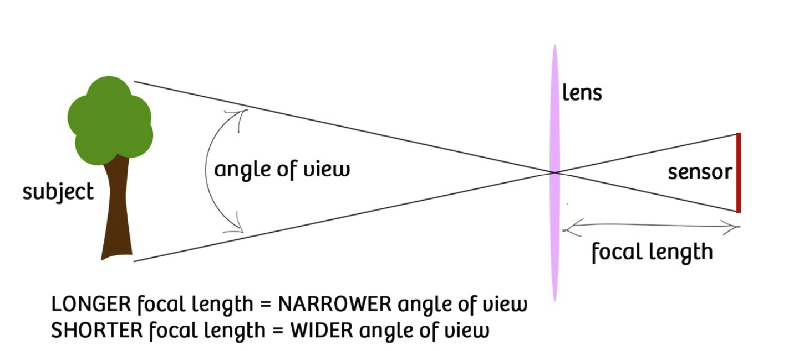
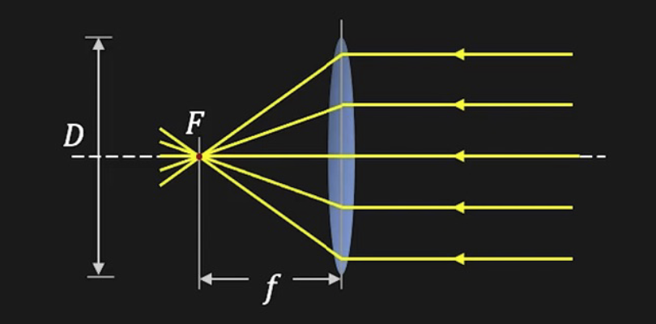
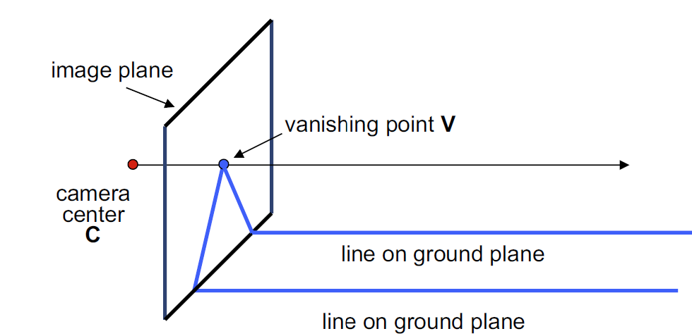

01 Image Formation
约 1688 个字 预计阅读时间 6 分钟
相机与透镜¶
最简单的相机模型是利用小孔成像实现的，我们称之为针孔相机模型（Pinhole Camera Model, PCM）。如下图，我们在物体与成像面之间，添加一个障碍物来挡住大部分光线，从而使得成像面上的点和物体上的点是近似“一一对应”的。如果没有添加障碍物，那么物体上的不同的点反射的光线会在成像面上重合，导致成像的模糊。

我们称这个障碍物上面的小孔为光圈（aperture）。按照之前的叙述，看起来光圈越小，越能在成像面上保持物体的原始形状，但是它并不是越小越好。其原因主要有两个：一方面，光圈越小，通过的光越少，成像会变得越弱；另一方面，光圈越小，或者说越接近于可见光的波长，衍射就越明显，同样会导致成像的模糊。其效果可以在下面一张图中体现：

为了解决光圈导致的光通量减少的问题，我们采用透镜（lens）来代替一部分小孔的功能，它具备小孔的成像特性，但是可以收集更多的光线。当然，物距 \(o\) 、像距 \(i\) 和焦距 \(f\) 之间的关系为：
如果 \(o \rightarrow \infty\) ，则 \(f \rightarrow i\) 。这个式子可以很轻松地通过几何光学方法导出，在此略去。
对焦距的改变可以被视作一种缩放，它与视野（field of view, FOV）有关。我们所谓的视野就是在传感器上所能看到的物体的范围，其与焦距的关系如下图：

在上图中，我们同样发现，视野也和传感器大小（sensor size）有关，传感器越大，视野也就越大。
在透镜的模型中，我们的光圈就变成了仅控制光的通量的设备，如下图中的 \(D\) 标记的就是光圈的直径：

一种更加方便的做法是，直接用焦距为单位表示光圈的直径，这就是所谓的 F-数（F-number ，或称光圈数）：
透镜将一点发出的光汇聚到一点，因此不可避免地会出现对应的点不在成像面上的情形，这种现象被我们称为失焦（defocus）。通过一点点几何推导可以计算，模糊圈（blur circle，即成像面上一点的像的集合）的直径为：
其中 \(i\) 为实际像距，\(i'\) 为理论像距，\(D\) 为光圈大小。
于是我们可以引出景深（depth of field, DoF）的概念。我们称图像“足够聚焦”的物距范围为景深，在这些点上，模糊圈的直径小于像素大小，因此失焦没有影响最终的成像结果。同样通过一些几何推导可以得到：
几何图像生成（geometric image formation）¶
几何图像生成描述的是从三维世界到二维图像的投影。我们的相机模型描述的就是这个过程，接下来，我们将使用投影的方式来描述这一点。考虑三维点：
在二维平面上被投影到：
为了更好地描述它们之间的关系，我们采用齐次坐标（homogeneous coordinates）。其转换方式就是对原先坐标加上一行 \(1\) ，即：
反过来的转换是除去扩张的那一列：
这种方式定义的坐标很显然对伸缩不变，从代数的角度看，它就是一个商掉某种等价关系的欧氏空间，这个等价关系定义为：
欧氏空间视作 \(\mathbb R\) 上的线性空间 \(V\) ，则与之对应的射影空间 \(\mathbf P (V) = (V - \{0\}) / \sim\)。
在这种情形下，我们就可以将投影表示成一种线性变换：
注意，在原始情形下，这种变换从根本上就不是线性的。因此，我们取齐次坐标的含义就是把投影“变成”线性的，这通过丢弃原有坐标中的长度、角度信息来完成。
通过这种视角，我们可以更进一步地理解投影的含义。它将直线映到直线，但不保长也不保角，事实上，长度和角度信息在射影几何中就是不必须的，从这个视角可以更好地理解投影操作。
对于这种不保角性的一个很好说明是灭点（vanishing point）的存在。一族平行线在被投影之后收缩于同一点，这个点与相机的连线恰与这族直线平行，如图：

在空间中，任意一组平行线的灭点都在同一条直线上，我们称之为灭线（vanishing line）。这几个结论的证明在此略去。
在建筑摄影的过程中，投影经常带来不好的效果。倾斜相机会导致竖直线聚于一点，而直接平视拍摄会导致相机只能捕捉到建筑的最下方部分；而如果将透镜向上移，则能捕获完整的水平图像，其数学原理由 Scheimpflug 原理描述，在此不作展开。
另一种投影的问题由达芬奇指出。在使用它拍摄一组平行的栏杆时，越靠近画面外侧的栏杆会显得越粗。这种形变（distortion）是由于投影原理自身。不理想的透镜则会导致另外两种径向（radical）的形变，即枕形畸变（pin cushion）和桶形畸变（barrel）。
在投影矩阵中取 \(f = 1\) ，我们可以得到正交投影（orthographic projection）的描述。这种投影发生于相机到成像面的距离为无穷时，表现为单纯地“压缩”了 \(z\) 坐标，将 \((x, y, z)\) 映到 \((x, y)\)，这是投影的一种特殊情形，其灭点和灭线都在无穷远处。
光度图像生成（photometric image formation）¶
下面我们来描述三维世界到二维图像的色彩关系。
Error
未完成！